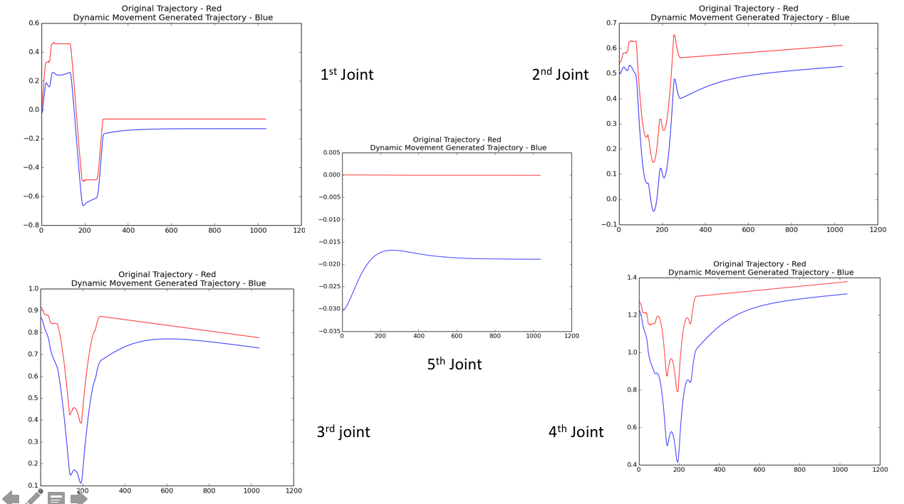

EKF LOCALIZATION ON UTIAS DATASET
JANUARY - FEBRUARY 2020
OBJECTIVE
To implement the Extended Kalman Filter based localization for SLAM using the UTIAS dataset available online
RESEARCH ASPECTS
• Giving demonstrations to the manipulator in task space and conducting learning experiments in joint-space
• Understanding scope of temporal and spatial scaling and how it reflects in the task space

FlowChart of data the process
OVERVIEW
SLAM is essentially an online process that needs to handle the dynamic environment and other variables. Robot Localization is severely prone to sensor inaccuracies, model inaccuracies, environmental conditions like terrain, ambient lighting issues among others. Similar problems exist with the mapping process where offline as well as online techniques are employed to enhance the behavior. Thus, SLAM applications are very difficult to simulate with appropriate representations of real-life situations. The UTIAS dataset being used in this project has the robot logs for sensor data and the corresponding groundtruth information for the landmarks which helps implement different localization and mapping techniques on real information.
DATASET
The UTIAS Multi-Robot Cooperative Localization and Mapping Dataset is created by the Autonomous Space Robotics Lab at the University of Toronto. The provided dataset has the following characteristics and in-depth information about the same can be found on the dataset website.
- Robots - The dataset has data from five different robots run simultaneously, with a laptop onboard and a monocular camera for sensing. The information available is 1) odometry, 2) measurements(range and bearing) and 3) groundtruth for robot poses and landmarks poses.
- Landmarks - There are 15 cylindrical tubes spread out randomly in the environment.
- Odometry - The +x axis is along the forward heading of the robot. The odometry data is linear forward velocity (v) and angular velocity (\omega) logged at 67 Hz or 15 milliseconds.
-
Groundtruths - The dataset provides the robot pose (x, y, θ) and the landmark position (x,y) for several timestamps, in the global frame. All this information is collected using a Vicon motion capture system.
METHODOLOGY
The complete environment was setup in V-REP and Python using its Remote-API interface with Python
The demonstrations could be fed to the simulation model in task-space using a gaming controller that uses ROS based Inverse Kinematics service
The training was done in joint space considering the variations at each joint level over time.
Several combinations for the number of Gaussian basis functions were tested and nfs = 150 gave most reliable results

Dynamic Movement Primitive Training pipeline
RESULTS
• The setup was successfully trained successfully for a given demonstration
• Testing on changed terminal states and temporal scaling requirements worked fairly well. Spatial scaling was not tried to avoid reaching joint limits for the robot
Initially learned DMP trajectory

Testing for changed start and end positions for all the joints

Testing for changed terminal states and temporal scaling (doubled time-span)

Snippet of the various parameters generated in the learned trajectory
Changed Terminal States | Temporal Scaling - Twice Slow
DMP - Changed Terminal states as well as Temporal Scaling